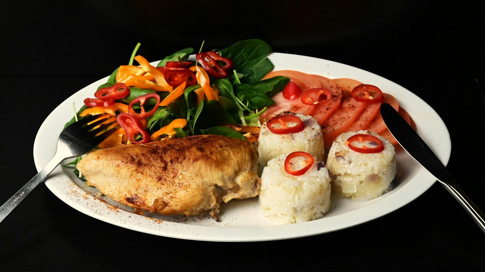
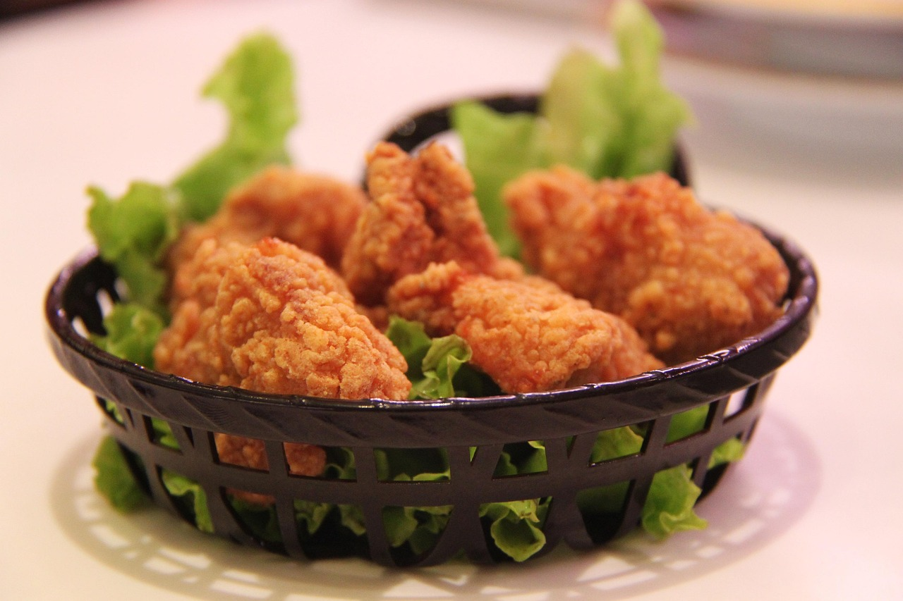
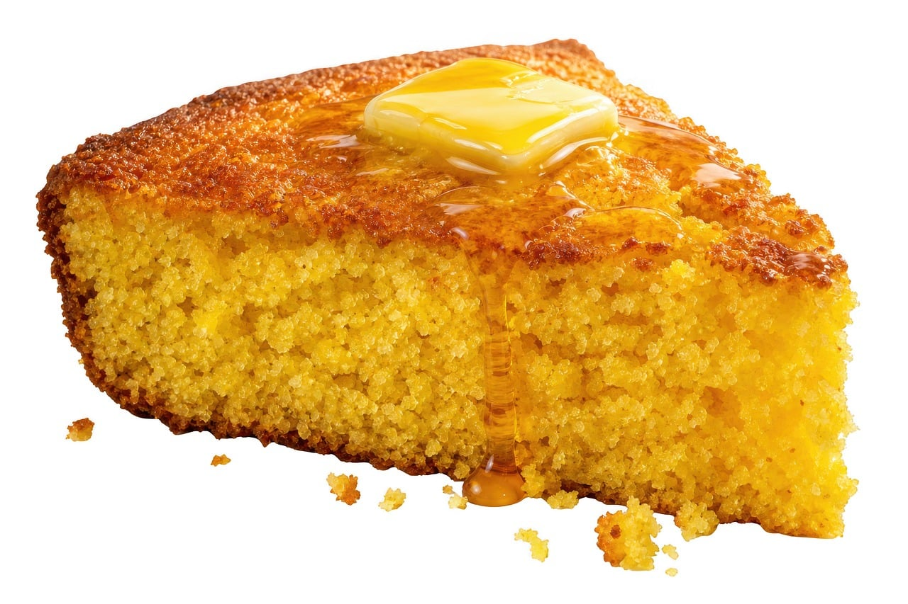
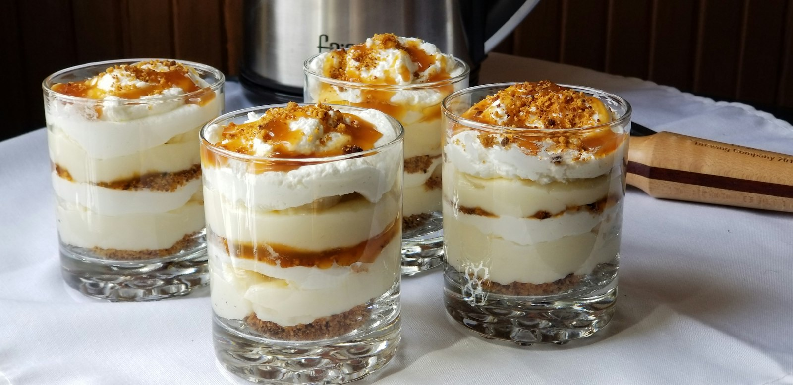

Fried chicken
Hot, craggy, seasoned all the way to the bone. The first thing to run out.
House favorite
One line, one plate, and a whole table of vegetables to choose from. We open at 11:30 and we cook until it's gone — Monday through Saturday, right here on West Currahee Street.
Shirley's is a cafeteria-style soul food cafe. You walk the line with your tray, point at what looks good, and the ladies behind the counter pile it on. Fried chicken, baked chicken, pork chops, catfish, whiting — then greens, mac and cheese, yams, black-eyed peas, cabbage, fried okra, cornbread.
It is not fancy. It is not fast-casual. It is a plate of food that tastes like Sunday, served by people who know your name by the second visit. Folks drive in from Clarkesville, Cornelia and Lavonia just for the lunch window.
 The counter, noon
The counter, noon
The line changes daily, but these are the plates that keep Toccoa coming back. Prices are posted at the counter each morning.

Hot, craggy, seasoned all the way to the bone. The first thing to run out.
House favorite
Fried or baked, whichever is on the line. Ask for the pan gravy.
Fried or baked
Cornmeal-crusted and fried to order on fish days. Livers, too, for the regulars.
Friday favorite
Baked in the morning, gone by two. Get two — everybody does.
Made dailyWe serve 11:30am to 2:00pm, Monday through Saturday. Closed Sunday. Come early on Fridays — the fish goes fast.
Pick a meat, then three or four vegetables. The pan is right there — point at what you want and they'll dish it up hot.
Grab a sweet tea, find a seat, and save room. The banana pudding and peach cobbler are made in-house.




★★★★★The best soul food around. Everything is seasoned just right and the ladies are so sweet. Worth the drive from Cornelia.
★★★★★Real meat-and-three, real prices, real people. I get the fried chicken and collards every single time and it never misses.
★★★★★Go early because they sell out — that should tell you everything. The banana pudding is the best I've had.
We're on West Currahee Street, a few blocks off the main drag and right around the corner from the historic courthouse. Parking is on the street and in the lot behind the building.